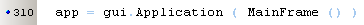

April 2008
PocketPyGUI Emulator 
Introduction
As wxPython for windows-mobile hasn't been updated for about 2 years, I assume it's dead, and possible we can expect problems with the newer win-Mobile versions, like Win-Mobile-6. PocketPyGUI (developed by Alexandre Delattre) looks like a good replacement, although it has a different syntax from wxPython and there's no cross platform development tool (yet).
This is a first attempt to make a cross platform emulator for PPyGui.
Downloads: api.zip
Limitations / ToDo
Creation of the mainform in the parameter-list of the application creation is not allowed. In wxPython ( and most other GUI) it's not allowed to create forms before the application is created.

So you've to create the application first (which is also allowed in PPyGui), and then assign an instance of the mainframe
Sizer defaults, PPyGui uses proportion = 1, IF the control has no best size. In wxPython the notebook has a best size, so the default will be proportional = 0, whereas PPyGui uses proportional = 1. Probably there will be more of such situations.
UniCode, as my current installation is an ANSI version of wxPython, I can't test unicode support
Fonts, mobile uses one of the following fonts ( 'Tahoma', 'Segoe', 'Nina'), the program will try to load one of these. Due to copyright these fonts are not allowed to be distibuted.
Dialogs Position, under windows positioning of dialogs in wxPython is always screen-center and not application center.
FileDialogs, the control under windows/wxPython is very bad, no positioning, nostyle settings and besides that, the layout in win-CE is completely different. These should be recreated as native components, without the use of windows explorer.
SIP, for this moment, only keyboard is supported
VSizer, because it's a legacy control, it's deliberately not supported
Skin, my artistic talents are below zero, so I'm not able to create a nice looking skin
Platforms, the program is only tested under Win-XP, but most things should work on any platform. Known issues:
|
Bugs:
|
|
Including API With the code shown on the right, the correct api is loaded, depending of the actual system is a mobile device or not. |
|
Virtual Keyboard From the virtual input devices, only the keyboard is supported. From what I've read this only works under windows, so if anyone has a platform independent solution.... |
|
Labels ToDo: - find out what font resemblance the CE font the most For this moment also the bug in PPyGui is implemented: changing the font color only, changes the size of the font to 9/10 ? |
|
Buttons |
|
Spin / Slider / Progress |
|
Edits ToDo: - style = "number" |
|
Lists I don't understand yet what this list should do ?? When I click on a list item, some kind of double list is created, see image on the right ???? |
|
Tables Todo: - multi-row select |
|
Common Dialogs Here the standard windows dialogs are used, which have one major disadvantage, they are always screen centered. |
|
File Dialogs For the moment these are implemented as standard windows file dialogs, which can't be controlled fully and are completely different from the CE-view as shown on the right. In the future it might be valuable ( because manipulating such complex data on such a small screen is difficult) to build these dialogs with native components. |
|
Date Time is not implemented. Generates a Calendar, which disappears when either a new date is selected or focus is lost. ToDo: - highlighting not perfect |
|
HTML enableshrink is not available in wxPython |
A real world application